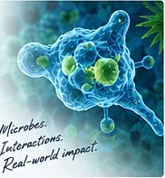

Environmental
Microbiology
Microbial diversity, ecology and function in natural and polluted environments.
PEOPLE · MICROBES · ENVIRONMENT · SOLUTIONS
Microbiologist, PhD Researcher & Lecturer
I am a microbiologist, PhD researcher and lecturer working at the intersection of microbial ecology, environmental microbiology, bioremediation and One Health. My research explores how microorganisms and their interactions can help solve real-world challenges, from pollution and environmental contamination to antimicrobial resistance and global health.
Cleaner
Environments
Healthier
Communities
Sustainable
Futures
Science
for a healthier
tomorrow

“Microbes hold enormous potential for a cleaner environment, healthier communities and a more resilient planet.”— BASHIRU SANI
Microbial diversity, ecology and function in natural and polluted environments.
Harnessing microbes for the removal of pollutants and a cleaner, healthier planet.
Understanding microbial interactions, antimicrobial resistance and the links between human, animal and environmental health.
Using genomics, metagenomics and bioinformatics to uncover microbial functions and solve real-world problems.
My PhD research investigates the interactions between free-living amoebae and their microbial symbionts in hydrocarbon-contaminated environments, with a focus on bioremediation potential and antimicrobial resistance dynamics using omics approaches.
Learn More About This Project →
How microbes live, interact and adapt in different environments.
Using microbes to mitigate environmental pollution and restore ecosystems.
Exploring AMR in environmental contexts and its links to human and animal health.
Generating and analysing omics data to understand microbial functions and drive solutions.
Bacterial Empire, 2022
IMC Journal of Medical Science, 2022
Biosafety and Health, 2021
Get In Touch
I'm always open to discussing research ideas, collaboration opportunities, or ways to support a cleaner, healthier and more sustainable world.